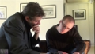
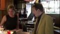
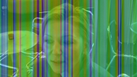
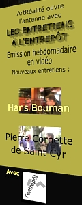
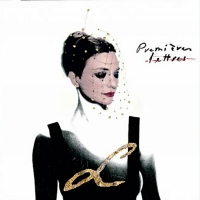
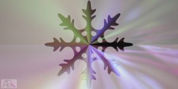

| |
|
Archives 2012
Actualités / blog des sites
|
27/11/2012
Nouvel entretien filmé à
l'Entrepôt :
Charles Gassot et les
Cent Briques
Un contenu exclusif, plutôt dense,
parfois un rien people, où il
est question de :
* cinéma
* d'arts plastiques
* de cinéma et d'arts plastiques (les
deux ensemble)
* d'action à Madagascar pour la
sédentarisation, sur fond de décharges urbaines, de brousses en
renouveau et d'une vente aux enchères exceptionnelle
* d'Isabelle et son nounours.
Cliquer ici.
3/11/2012
Pardon pour les
perturbations !
Comme annoncé ci-dessous, la diffusion
des sites a été fortement perturbée ce samedi.
Nous avons dû différer le changement
d'hébergement pour différentes raisons qui n'ont pas de rapport avec
les opérateurs. Ces travaux sont une mise en place de première
importance notamment pour le développement vidéo.
31/10/2012
Possibles perturbations
cette semaine
sur le Réseau ArtRéalité
Nous changeons d'hébergeur, ce qui peut
impliquer de petits soucis techniques temporaires à la diffusion car
il s'agit d'un changement structurel. La structure matérielle sera en
effet plus répartie qu'auparavant.
Pourquoi ne pas poursuivre notre route
avec notre serveur dédié OVH ?
Pour deux raisons :
* l'absence
de véritable maintenance. Si vous voulez de l'aide, même dans une
offre qui n'est pas l'entrée de gamme, vous devez payer. Et c'est
cher.
Nos sites ont souffert de cela. D'autres
hébergeurs sont plus sérieux. Avec Ovh nous avons l'impression d'un
propriétaire qui ne réaliserait aucun entretien, sinon fortement
tarifé.
* le refus
de mettre à niveau les systèmes pour accueillir les vidéos au format
MP4. Une aberration totale.
Cela va loin : sur un forum
d'utilisateurs Ovh, l'un d'entre eux expliquait il y a peu qu'il avait
adopté l'offre dédiée au lieu du mutualisé (beaucoup moins cher) afin
de diffuser plus confortablement ses vidéos. A son grand dam, il a
découvert que ce format pourtant populaire n'était pas supporté.
Des frais engagés pour rien, beaucoup de
temps perdu et surtout une énorme déception pour cette éditeur floué.
Bien floué car nulle part on ne trouve mention de cette anomalie Mp4
sinon dans les plaintes sur les forums. La réponse du support est "on
fait pas la vidéo". Qu'est-ce que cela veut dire en 2012 ?
De plus, dans la mesure où notre
activité vidéo va s'intensifier et emploiera rapidement le format Mp4,
bien meilleur que le Flv actuel, nous ne pouvons pas rester chez cet
hébergeur.
Nous vous demandons donc, chers
lecteurs, de ne pas trop nous en vouloir en cas d'interruption de la
diffusion ou de la messagerie, particulièrement à compter du 3/11. La
situation, une fois rétablie, sera plus stable et la qualité de nos
vidéos bien meilleure.
Reprise des
tournages
Dans une quinzaine de jours, nous
entamons une nouvelle session de tournages à l'Entrepôt. Sa cadence
sera bimensuelle (tous les quinze jours). Sa qualité audiovisuelle
sera meilleure (MP4) et devrait par la suite
s'améliorer grâce à un pré-traitement en imagerie de synthèse que nous
avons testé pendant l'été.
Pourquoi "par la suite" ? La raison est
simple : le gain en qualité est certes considérable mais le temps de
calcul est également augmenté de manière considérable !
Aussi sommes-nous en discussion en ce
moment avec des responsables, à Amsterdam et à Helsinki, pour mettre
en place un système de calcul partagé, et derrière, une nouvelle
manière de travailler en vidéo.
Il n'est pas impossible qu'une seconde
émission apparaisse dans le courant de cette deuxième session. A
confirmer encore, mais cette nouvelle production est à l'étude en ce
moment même.
D'autres initiatives sont à l'étude.
C'est beaucoup de travail, des enjeux assez importants pour le Réseau
ArtRéalité, et pour ces raisons, ne nous en voulez pas trop de nos
retards s'il vous plaît, chers lecteurs.
Emmanuel Luc,
éditeur
Ps : nous continuons à répondre aux
courriers des lecteurs, même si ces échanges ne sont plus diffusés sur
Dotapea depuis quelques mois faute de temps. Dotapea va changer de
structure logicielle et nous commençons à préparer ce changement.
Lorsque cela sera fait, nous reprendrons la diffusion du courrier d'une
manière plus confortable.
Donc n'hésitez pas à nous écrire, nous
répondons dans la mesure du possible et si aujourd'hui ils nous valent
du retard, nos efforts se portent précisément à l'élargissement de la
mesure du possible.
:)
8/10/2012
Pour le plaisir
Pour le plaisir, chers amis lecteurs :
http://apod.nasa.gov/apod/ap120209.html
20/9/2012
Les mains sales
[Editorial]
Parfois, le politique rattrape le
culturel, ce qui peut nous obliger à donner quelques précisions et
effectuer une mise au point.
Dans nos pages, les lecteurs trouvent de
nombreuses références lexicographiques ou d'autre nature à des
termes et concepts provenant de la langue arabe ou du persan.
La langue et la culture françaises et
plus généralement l'Occident ont beaucoup emprunté aux langues et
cultures musulmanes.
Il est donc nécessaire que nous
réagissions à une actualité qui concerne ce sujet.
Le ministre français de l'intérieur, après avoir
à son tour fait pourchasser des Roms sous les regards consternés de l'ONU et du
Commissariat aux Droits de l'Homme de l'UE, a récemment fait ficher 174 personnes musulmanes interdites de manifester
pacifiquement. Puis les autorités ont réitéré leur interdiction pour des
manifestations ultérieures.
Ces interdictions sont incompatibles avec la
DUDH.
|
|
|
Dès lors il est temps, sur le Réseau
ArtRéalité, de signifier un profond désaccord
avec les provocateurs anti-musulmans ou anti-Roms d'Amérique ou de France
et avec des autorités qui contreviennent au droit international en
autorisant aux uns la liberté d'expression et en la refusant aux
autres d'une manière ostensiblement partiale.
Pire : la presse annonce ce soir le
démantèlement de trois camps Roms, 150 personnes au total, 2 relogées.
Il n'est pas inutile de rappeler que la
déportation de populations est interdite. C'est là encore une
question de droit international.
La ligne éditoriale de ArtRéalité,
puisqu'il faut en venir à parler de ces questions de fond paraissant
un peu éloignées de nos travaux, est légaliste
sur le plan international mais s'autorise de toute façon la
critique, condition nécessaire à la résistance.
Au point de vue éthique, les personnes
qui se rendent responsables de conflits par des déclarations odieuses
ou par des pratiques illégitimes ont beau tergiverser avec le droit,
elles n'en ont pas moins, et ce durablement, les
mains sales.
Salam aleikoum chers amis et respect
sans limite aux amis du Prophète - sAaws -, comme aux frères errants
venus d'Inde à qui l'on inflige là, maintenant, un destin terrifiant
pour des raisons d'un autre siècle.
Emmanuel LUC
Editeur
Christian Gattinoni
Ouverture d'un site
personnel
Un travail extraordinaire. Visite
hautement conseillée.
christiangattinoni.fr
Chris Marker
Le cinéaste est
décédé, laissant un trésor pictural que l'on n'a pas fini d'étudier ni
de goûter avec bonheur. Etonnant par son caractère profondément
transversal, foisonnant mais logique, naturel même, son "Sans soleil"
par exemple peut être parfaitement vu en 2012 comme une série
d'indications valant pour différentes disciplines, y compris,
certainement, les arts plastiques.
Lien vers une recherche Google.
|
|
|
Salut de Syrie
Abou Naddara, un groupe d'artistes
syriens, met en ligne une vidéo qui montre quelques enfants saisis
malgré eux dans le vacarme des entraînements obligatoires
des jeunesses baassistes.
La
vidéo complète
Le site de Abou
Naddara
La java s'en, la java
s'en va
Chers lecteurs, vous l'avez constaté,
des éléments parasites troublaient la lecture de cette page. Il
s'agissait d'attaques récurrentes contre notre serveur.
La presse a relayé il y a peu une
information concernant une grave faille de sécurité de Java (l'applet
Java que l'on trouve sur presque tous les navigateurs webs).
Depuis une semaine, nous savons que les
attaques contre notre serveur étaient rendues possibles par cette
faille. En effet, depuis que nous avons retiré Java de nos
ordinateurs, nous n'avons plus aucun problème de ce genre.
Nous ne saurions trop conseiller nos amis
lecteurs de faire de même pendant quelque temps.
Un silence prolongé
Et pourtant, pas de vacances chez nous
cette année !
Oui, ce fut un silence de près de deux
mois pendant lequel nous avons cependant répondu aux courriers des
lecteurs.
Il y a plusieurs raisons à cela. On
n'en dira guère plus sinon que quelque
chose se prépare,
qui aura pris du temps.
Mais chut !
29/7/2012
Dominique Sennelier
Entretien à
l'Entrepôt
En deux vidéos nous évoquons l'histoire
d'une entreprise connue de longue date par les
plasticiens.
|
|
|
La première
(15mn) évoque l'avènement puis le
succès d'une initiative encore artisanale, dans le climat
d'effervescence du Paris des temps modernes.
|
|
|
La seconde
(24mn) fait le point sur l'évolution
de Sennelier sur 125 ans d'histoire d'entreprise : quel est le
secret de cette réussite ?
[Editorial]
Au fil de cet entretien, il apparaît
qu'il n'existe pas de réponse univoque à cette question du secret,
pour le moins.
N'étions-nous pas plutôt en train, d'une
manière ou d'une autre, de parler d'alchimie ?
La recette
alchimique. Cumuler et associer une passion des arts, des
sciences, un sens de l'écoute du public et des attentes des artistes
permettant d'ajuster non sans savoir-faire une production à une
demande même à peine esquissée.
Mesurer aussi l'importance d'une
constance résolue même quand un produit, fut-il un cake d'amour
pictural, n'est plus au goût du jour.
Quand l'heure est venue d'une expansion,
s'ouvrir à d'autres lieux et cultures, ce qui prend le temps que la
confiance fasse son nid. Ajoutons enfin - cela paraît indispensable en
pareil cas - le sens des proportions.
Au-delà des pincées et soupçons, des
larmes et des zestes, des pâtes montées et réagies, on cherche
naturellement l'armature ou peut-être l'Adn de cette alchimie, "la
chose" mystérieuse qui maintient de fait l'édifice dans un fleuve de
mutations.
Une idée vient à l'esprit : qu'en
serait-il si tout au fond de la cornue l'on n'avait d'abord versé
quelques doubles hélices d'esprit familial ? Cela n'échappe à
personne, Sennelier est une entreprise familiale, mais est-ce le
secret des secrets ?
Plus concrètement, pour ArtRéalité à
l'Entrepôt, cette interview est une occasion d'évoquer le rôle
déterminant des intervenants situés tant à la fabrication qu'au
contact du public. Ainsi s'aperçoit-on, pour ne citer que cet exemple,
que le pastel gras fut créé par Henri
Sennelier en réponse aux attentes de Goetz et Picasso (2nde vidéo). Un
nouveau procédé pictural est une contribution rarissime.
Une précision importante : ce document
est le fruit d'une production indépendante.
L'attention portée sur nos sites
à tous les intervenants remonte à la
fondation du Réseau ArtRéalité.
Emmanuel Luc
|
|
|
|
7/7/2012
Bellastock, festival
d'architecture
Nouvel Entretien à
l'Entrepôt
Après un premier travail en commun publié
l'an dernier (lire le chapitre XXXI
des Dialogues de Dotapea), nous publions une interview accompagnée de
clips.
Une manière d'évaluer, au travers d'une
manifestation très originale qui a pris une certaine dimension en
quelques années, l'évolution d'une jeune génération d'architectes et
d'évoquer la proximité aussi bien que les différences entre arts
plastiques et architecture.
Lien
|
|
|
|
14/5/2012
Vibrer avec la lumière
Un lingot d'or disparaît, des métaux
"chics" changent de couleur, une vénérable coupe romaine du IVè BC fait
la preuve...
C'est le 8ème Entretien à l'Entrepôt, avec
Nicolas Goubet de l'UPMC. Et le premier à caractère scientifique.
Lien
|
|
 |
|
8/5/2012
Orcalyde, entretien en
ligne
Une construction intellectuelle domine
l'oeuvre d'Orcalyde sans en estomper la grâce. Entretien à l'Entrepôt.
Lien
26/4/2012
Retard
Perdre son père est un événement très dur,
une épreuve. Ainsi pendant quelques jours le travail a été suspendu sur
le réseau ArtRéalité dont je suis le coordinateur.
Je vous prie de bien vouloir excuser ce
retard qui touche essentiellement la production vidéo (les
Entretiens à l'Entrepôt).
Le travail continue cependant. L'entretien
avec Grégoire Saurel, fondateur du festival d'architecture Bellastock a
été filmé ce jour même. La semaine prochaine Philippe Brizon (dir. de
l'Entrepôt) et moi recevons Dominique Sennelier.
|
|
 |
Pour vous faire patienter, un travail
ludique avec Orcalyde avant son entretien complet :
Lien
Emmanuel Luc
19/4/2012
Annonce d'une première
Le début d'un Dotapea en vidéo ? Il est
trop tôt pour l'affirmer et chacun en jugera au fil du temps mais
aujourd'hui a eu lieu le premier Entretien à l'Entrepôt consacré à un
invité scientifique. C'est un "Dialogue
de Dotapea" filmé. Nicolas Goubet, notre invité, travaille sur un
sujet à cheval sur l'art et la science, les nanocristaux d'or.
Pour l'occasion, nous avons déplacé le
lieu du tournage dans la galerie de l'Entrepôt afin d'obtenir un son et
une image plus purs tout en maintenant la "nudité vivante" de
l'enregistrement. Nous allons continuer à utiliser ce lieu.
Diffusion dans quelque temps, après
l'entretien avec l'artiste Orcalyde, en cours de montage.
L'entretien du 29/3 avec Lauri Bounatirou,
fondateur de Fine-ArtTv.Tv va nécessiter un tournage complémentaire.
Prochain invité scientifique : Michel
Menu, chef du département Recherche du C2RMF le 31/5. D'ici-là, le
programme est sur le site des Entretiens.
Lien.
Après avoir pris beaucoup de retard au
début - nous avons essuyé des plâtres, c'était prévu -, notre émission
commence à s'approcher du rythme de diffusion hebdomadaire nominal.
|
|
 |
|
16/4/2012
Pierre Cornette de Saint
Cyr :
un entretien frais tourné
en diffusion publique
La mise en place d'une émission ne va pas
sans difficultés techniques, ce qui explique un rythme de diffusion
encore heurté, mais tout se passe comme prévu.
Un nouveau "format court" filmé à
l'Entrepôt, Paris XIVème et consacré au célèbre commissaire-priseur est
en ligne.
Cliquer ici
13/4/2012
Entretiens à l'Entrepôt :
quelques nouvelles
C'est une semaine de relâche, mais nous
continuons le travail. L'entretien avec Pierre Cornette de Saint Cyr est
prêt à être diffusé publiquement mais nous sommes en attente de
l'autorisation de Thierry Ardisson, contacté mercredi dernier, pour une
citation vidéo de son émission Tout le monde en parle. Il est
normal de lui laisser le temps de prendre connaissance du sujet mais
comme l'émission est nominalement hebdomadaire, une diffusion publique
temporaire aura lieu à partir de lundi, sous réserve de modification du
contenu.
Hacking sur Dotapea
Comme si l'on n'avait pas assez de
travail, nous devons subir les attaques de hackers.
La page Index, celle que vous lisez à cet
instant, est sous haute surveillance mais vous pouvez constater des
anomalies. Nous travaillons sur ce sujet. Une plainte sera déposée.
|
|
 |
|
3/4/2012
Ai Weiwei, un appel du
pied ?
Révolté par la surveillance, les fouilles
et les perquisitions dont il est victime, l'artiste assigné à résidence
force le trait et installe des caméras connectées dans sa maison. Ce qui
fait suite à la démolition de son atelier, au paiement d'une monstrueuse
caution et à sa détention arbitraire durant des mois dans un lieu secret
l'an dernier.
L'artiste entend protester contre un
pouvoir qui de fait ne change rien à sa politique ouvertement
anti-démocratique. Ce qui n'est pas sans résonance en Occident. Citons à
nouveau (après l'éditorial du 12
avril 2011) Philippe Grangereau :
" L'embastillé Ai Weiwei a l'art de poser
les bonnes questions. L'an dernier, dans un éditorial publié par le Wall
Street Journal, il s'interrogeait sur le partenariat que l'Occident avait
scellé avec la Chine, lui permettant de devenir la seconde puissance
économique du monde tout en légitimant et en renforçant son régime
répressif. « Comment, écrivait-il, un Etat basé sur la limitation des
flux de l'information et de la liberté de parole peut demeurer puissant ?
Et si cela est possible, alors, quelle sorte de monstre va-t-il devenir ? » "
Cela donne a réfléchir car oui,
effectivement, l'Etat chinois continuerait à entretenir ses laogaï,
camps de travail obligatoire, où des millions de personnes (de 2 à 10
millions selon les sources) fabriqueraient, au moment où vous lisez ce
texte, dans des conditions apparemment innommables (information non
confirmée), des objets que l'Union Européenne laisserait entrer. Mais
restons humbles : nous n'avons pas les preuves de tout cela.
Lien vers une recherche Google. Cependant, l'appel du pied d'un très
grand artiste n'est pas anodin. Il est au contraire essentiel.
Lien vers la webcam de Ai
Weiwei.
Concernant le laogaï, on peut aussi voir
un reportage de la NRK, télévision publique norvégienne, sur Harry Wu,
célèbre dissident.
Lien (en anglais).
Emmanuel Luc
Editeur
31/3/2012
Entretiens à l'Entrepôt :
la fête continue avec l'interview de Hans Bouman en ligne en version
définitive
Nous rattrapons progressivement notre
retard après une sérieuse mise au point de la chaîne de production.
Cette émission aborde l'art de Hans Bouman
sous l'angle de l'intensité : d'où l'intensité ou la "présence" d'une
oeuvre artistique provient-elle ?
Voir Les
entretiens à l'Entrepôt
30/3/2012
En retard - Pardon, mes
lèvres sont mortes à minuit
Toutes nos excuses : l'émission
hebdomadaire n'est pas très hebdomadaire en ce moment. Et pourtant, les
tournages le sont. La raison de notre retard est technique. Un problème
de synchronisation nous a fait réviser la chaîne de
production/diffusion. C'est maintenant réglé mais nous avons plus de
deux semaines de retard.
Les prochaines diffusions seront annoncées sur ce blog, sur le
Rss (fil d'infos) et bien sûr sur
entrepot.artrealite.com.
Chose importante : pendant la mise en
place de cette émission, nous n'arrivons plus à faire face à la demande
en termes de courrier des Lecteurs. Pardonnez-nous s'il vous plaît. La
charge de travail actuelle est considérable.
|
|
|
En attendant que
tout soit rétabli, pourquoi ne pas découvrir ou redécouvrir une oeuvre
grandiose, à cette adresse :
http://www.youtube.com/watch?v=hojQoER5WvU&feature=related
ou celle-là :
initiale-l.com
Et une autre splendeur :
http://www.youtube.com/watch?v=7H2zyv4tzlo&feature=related
Ce ne sont pas des tableaux, pas des
installations, des photos ni des sculptures, mais l'exception crée la
règle et parfois il est spécialement doux d'ouvrir les portes des arts,
avec un émerveillement précieux car rarissime - le mot est faible -
lorsqu'une somptueuse poétesse sort de sa chrysalide, vous enchante d'un
tour de phrase, vous écarquille les lobes frontaux, traverse les siècles
pour vous tirer la langue et vous fait verser des larmes d'ivresse.
Peut-être la poésie est-elle le langage commun des arts. Sans doute oui
et sur tous les modes, mais par quelle audace ou par quel miracle
renaît-elle devant nos yeux, la poésie, dans cette obscure période de
déclin ?
« (...) ta peau de nacre noir, la
courbe de ton cul.
Ce bruit des bracelets que tu colles à tes pas qui écrivent à chaque
fois mon corps en pointillés, et puis tes yeux surtout et leur drôle de
lueur, ma petite, ma douceur, je me souviens de tout. »
« Mes lèvres sont mortes à minuit au
premier son du carillon dont les douze coups m'ont réduite en une pluie
de cotillons »
Merci L pour cette bonne surprise du
retour de la langue - nous y tenons, à la langue - dans un univers
artistique qui avait besoin de renaître. Merci pour cette profonde
splendeur.
Pardon chers lecteurs pour notre retard.
Comme le dit l'artiste, "mes lèvres sont mortes à minuit". Mais elles
repoussent, nous allons de l'avant. Cela s'appelle essuyer les plâtres.
Emmanuel Luc
Editeur
|
|

"L" dans son album
"Initiale" |
|
19/3/2012
QUE LA FÊTE COMMENCE !
L'événement annoncé le 29/2 se réalise :
Ouverture d'antenne avec
les Entretiens de l'Entrepôt
Il s'agit d'une émission hebdomadaire
filmée à l'aide de technologies dernier cri au sein de l'Entrepôt (à la
fois centre culturel, biosphère, haut lieu culturel fondé par Frédéric
Mitterrand en 1975), dans une atmosphère vivante, en compagnie
d'intervenants des mondes des arts et des sciences.
Ceci ouvre l'antenne du réseau ArtRéalité.
Le site, les trois premières émissions au
format dvd 16:9 et le programme :
entrepot.artrealite.com
L'éditorial, qui indique le sens de tout
cela, est ici.
N'hésitez pas à nous
donner votre opinion.
29/2/2012
Evénement programmé
Non, après trois semaines de silence (sauf
messages directs pas encore publiés, dans le cadre du Courrier des
Lecteurs), non ArtRéalité ne dort pas, c'est le moins que l'on puisse
dire.
Cette dépêche est destinée à annoncer un
événement très important qui aura lieu dans quelques jours.
Sans donner de précisions pour garder la
surprise.
RSS : centralisation
Les fils d'informations vont être
centralisé dans le RSS de Dotapea. Lire notre communiqué dans la page
consacrée aux fils d'actualité.
Lien
8/2/2012
Visualisation des
sciences
C'est un projet expérimental qui a une
dimension esthétique, pédagogique et scientifique.
Il s'agit de demander des photographies et
des images de synthèse donnant visibilité à la recherche scientifique.
C'est un projet américain, de la NFS, le "Visualization challenge".
Il y a bien sûr à prendre et à laisser,
mais ce sont de très beaux voyages visuels.
Attention : c'est en anglais scientifique,
mais la visite vaut la peine. Et la démarche est très intéressante.
Lien
26/1/2012
Le fin mot d'une
intrigante affaire de conservation
Lors de la vente d'une oeuvre, un problème
de conservation peut prendre des proportions extravagantes. Il est
essentiel d'anticiper faute de quoi l'acheteur pourrait être découragé.
Une question déontologique.
Lien
20/1/2012
Le fil RSS de Dotapea est
réactivé
Les nouveautés Dotapea/ArtRéalité seront à
nouveau consignées publiquement sur les deux fils de sorte à transmettre
immédiatement les événements de l'année 2012.
Lien
19/1/2012
Un courrier des lecteurs
maintenant rénové
Des mois de travail, mais c'est fait et
nous espérons que cela améliorera l'ergonomie de cette importante
section du site Dotapea ainsi que l'efficacité des recherches en ligne.
Lien
(sections 2 et 3 de 2011)
Il reste cependant à publier les échanges
de courriers qui ont eu lieu pendant les travaux. Plus l'on travaillait
sur la refonte, plus on accumulait de courrier non en retard mais
impubliable à cause de ladite refonte !
Mais comment faire autrement ?
Nouvelles publications en vue ces
prochaines semaines, donc.
1/1/2012
Meilleurs voeux en
vidéo !

Pour évoquer la nouvelle année,
ArtRéalité/Dotapea vous propose un petit voyage dans un flocon de neige.
Lien sur l'image.
|
|
 |
Retour
début de page
|
|

 Communication
Communication
|
|